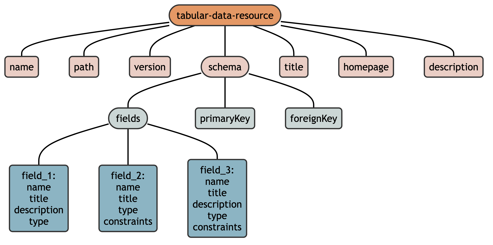

Introduction
Metadata
Metadata is information about data, but does not contain the data itself. For example, a CSV file cannot tell R (or other software) anything about itself including:
- general information like its name, title, description, or homepage
- how missing values are denoted
- column names, titles, types, formats, and constraints
- specific CSV “dialect” characteristics required to read it (e.g. encoding, quoting)
CODEC utilizes a specific set of standards to store community-level data in an effort to make them more interoperable and reusable.
Frictionless Standards
Frictionless standards are a set of patterns for describing data, including datasets, files, and tables. These metadata are contained in a specific file (separate from the data file), usually written in JSON or YAML, that describes something specific to each Frictionless Standard.
The CODEC metadata standards are based on the Frictionless Tabular
Data Resource standards (often written as ‘tabular-data-resource’
and abbreviated throughout the package as tdr), which is
composed of three Frictionless standards:
- Data Resource: describes an exact tabular file providing a path to the file and details like name, title, description, and more
- Table Schema: describes a tabular file by providing its dimension, field data types, relations, and constraints
- CSV dialect: describes the various dialects of CSV files, including terminator strings, quoting rules, escape rules, etc.
A tabular-data-resource consists of (1) a single table of data in a CSV file and (2) its metadata, represented as a hierarchical list in a specific format. On disk, this metadata is stored as a YAML file and in R, it is stored in the attributes of a data.frame (or tibble). 1
CODEC Metadata Standards
Language: The keywords “MUST”, “MUST NOT”, “SHOULD”, “SHOULD NOT”, and “MAY” in this document are to be interpreted as described in RFC 2119.
CODEC standards are versioned with {CODECtools}, so this vignette describes version 0.4.1.
Tabular-Data-Resource Metadata
The metadata of a CODEC tabular-data-resource is hierarchically composed of different descriptors :

property (or “metadata property”) are named values used to describe the data resource. The value of most properties are a single character string (e.g.,
name = "my_data"), but some are lists.schema (or “table schema”) is a special property that is a list of information about the fields (or columns) in a tabular-data-resource. schema includes a list of fields, as well as the value used to denote missingness and which fields are primary or foreign keys.
fields (or “field descriptors”) are a special schema descriptor that is a list of each of the fields in a tabular-data-resource, each with different descriptors containing field-specific information.
dialect (or “CSV dialect”) is another special property that stores information about the formatting of the data CSV file. The CODEC data standards require specific dialect values so that the
dialectdescriptor is not required for a CODEC tabular-data-resource.
A CODEC tabular-data-resource MUST contain name and
path descriptors. All other properties, schema, and fields
MAY be present, but MUST be one of:
## `summarise()` has grouped output by 'type'. You can override using the
## `.groups` argument.| type | name | value |
|---|---|---|
| property | profile | profile of this descriptor (always set to
tabular-data-resource here) |
| property | name | an identifier string composed of lower case
alphanumeric characters, _, -, and
.
|
| property | path | location of data associated with resource as a POSIX
path relative to the tabular-data-resource.yaml file or
a fully qualified URL |
| property | version | semantic version of the data resource |
| property | title | human-friendly title of the resource |
| property | homepage | homepage on the web related to the data; ideally a code repository used to create the data |
| property | description | additional notes about the resource |
| property | schema | a list object containing items in schema |
| property | _s3VersionId | the VersionId of the file stored on AWS S3; not user-generated |
| schema | fields | a list object as long as the number of fields each containing the items in fields |
| schema | primaryKey | a field or set of fields that uniquely identifies each row |
| schema | foreignKey | a field or set of fields that connect to a separate table |
| schema | missingValues | a list object, one for each column, containing the following |
| fields | name | machine-friendly name of field/column; must be identical to name of column in data CSV file |
| fields | title | human-friendly name of field/column |
| fields | description | any additional notes about the field/column |
| fields | type | Frictionless type of the field/column (e.g., string, number, boolean) |
| fields | constraints |
Frictionless
constraints, including enum, an array of possible
values or factor levels |
Examples
An example CODEC tabular-data-resource looks like:
name: tract_poverty
path: tract_poverty.csv
title: Fraction of Census Tract Households in Poverty
version: 1.2.1
description: measures derived from 5-yr 2019 American Community Survey
schema:
fields:
census_tract_id:
name: census_tract_id
title: Census Tract
description: 2010 vintage census tract identifier
type: string
fraction_poverty:
name: fraction_poverty
title: Fraction of Households in Poverty
type: number